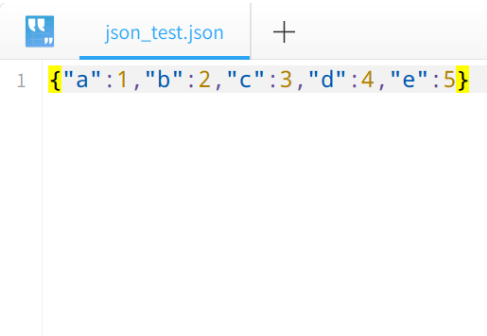
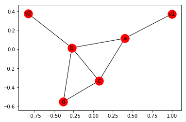
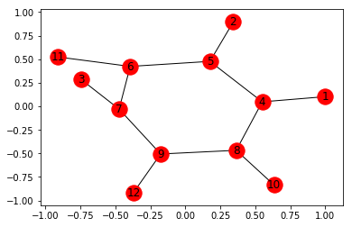
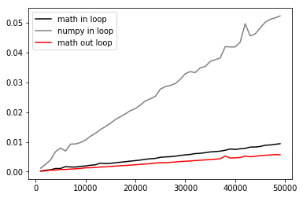
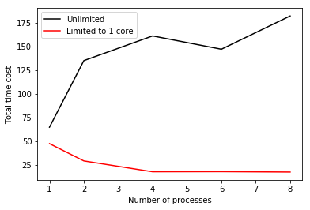
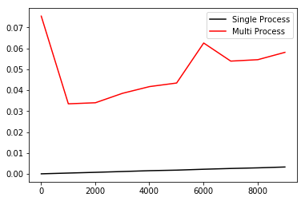
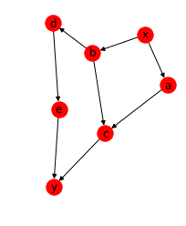
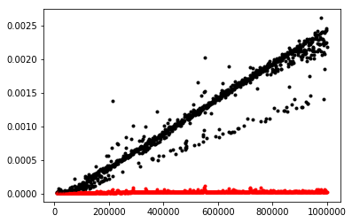
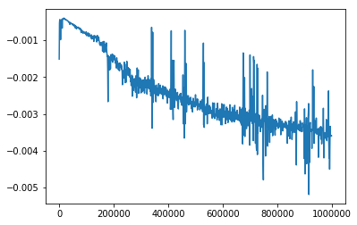

Dechin's Blog
Welcome to my blog. Subscribe and get my latest blog post in your inbox.

Write Python Objects Into Json File
In many cases we need a global arguments or open many files in different processes of multiprocess calculations. Here we can use the python package json to strore arguments such as list, dictionary or other string types into a json file and also we can read it as python arguments.
Read more →

The Effect of Tensor Treewidth to Running Time
In last blog we discuss about the relationship between tensor contraction order and tensor contraction treewidth, or means the contraction complexity of a tensor network. In this blog we will do some tests to know that how much the tensor complexity will effect on the running time of tensornetwork contraction.
Read more →

Tensor Contraction Order
Tensornetwork technology has been widely used in many body physics. Here we consider if the tensor cut can be used to optimize the tensor contraction complexity.
Read more →

Sin in loop or out?
You may be confused why we should focus on code optimization. In our realization of algorithms, different code style will cause different running time. Maybe 1s vs 5s, maybe 5s vs 1year. The difference will be large when the problem size go larger. For example you can see the optimization of sin function using in python.
Read more →

Multi-processes & threads
By using the opensource python package multiprocessing we can do our tasks parallelly.
Read more →

Multiprocessing Test
By using the opensource python package multiprocessing we can do our tasks parallelly.
Read more →

Networkx Test
By using the opensource python package networkx we can efficiently solve some graph problems like TSP. This article mainly includes the usage of networkx.
Read more →

Cupy Test
By using the cupy we can see if there is any advantage compare to pure cpu calculations, which is based on gpu multiprocess calculation and numpy-like.
Read more →

Pycuda Test
By using the pycuda we can see if there is any advantage compare to pure cpu calculations, which is based on gpu multiprocess calculation.
Read more →